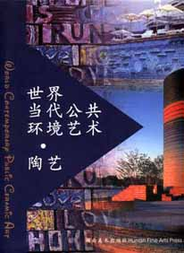
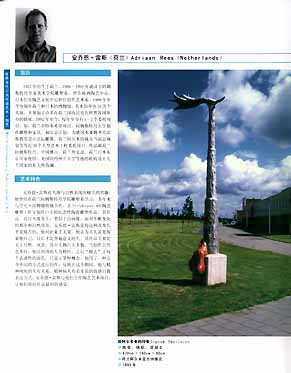

| Book Review | ||
| World
Contemporary Public Ceramic Art In recent times there has been much talk in the West about China. It is seen as the new economic powerhouse of the world, a rising star in so many fields, alongside, but ahead of India. China will be hosting the Olympics in Beijing in 2008 - a momentous occasion to present itself to the broader global community, an opportunity to claim its place as a world leader. I have been told that many things have changed in China in the past few decades. These changes also include the unparalleled rise of studio pottery, a relatively new phenomenon there. Don’t misunderstand this - China is one of the great cradles of pottery and the birthplace of porcelain. Ceramics were (and still are) practised by the anonymous craft potter, but also by reputable masters, in such pottery towns as Yixing and Jingdezhen. A few decades ago, the Western concept of studio pottery was little known in China. Since opening up to the West in the 1970s, the craft scene has spawned a healthy studio pottery movement. There are now hundreds of successful ceramic artists and studio potters, not to mention the thousands of folk potters in China. We in the West can only benefit from contact with these artists and their projects. And it also works the other way. These artists are hungry for information and stimulus from their peers and colleagues around the globe. They may ask “what is going on in the pottery scenes of Norway, Venezuela, Australia or elsewhere?” Zhang Yushan’s book World Contemporary Public Ceramic Art addresses a very important aspect of world ceramic art hitherto not written about in China - that of public sculpture. His work is encyclopaedic in scope, spanning 30 countries on five continents, with biographical details on 130 artists. And of course, Chinese ceramists making public art are well represented. An introduction by well-known American ceramic artist Vice-president of the International Academy of Ceramics Wayne Higby precedes four main chapters: Architectural Ceramics and Murals, Outdoor Ceramic Sculpture, Installations, Landscape Ceramics and Brickwork. Within these chapters, each artist has at least a single page, often a larger spread with up to a dozen high-quality photos of their work. This is the first and only Chinese language book of its kind available today. It’s an impressive, large format high-quality glossy publication with more than 240 pages. To mention a selection of the 130 represented artists would be to do the others a disservice. Suffice it to say that here you will find most high-profile public ceramic artists with an international reputation, as well as a few pleasant surprises. It is enlightening to see just what a huge role ceramics play in the realm of public art. Please note that this book is written mostly in Chinese, so it is primarily for that market. However, artists’ names and country of origin are also provided in English and the images speak a thousand words in any language. For the non-Mandarin speaker, World Contemporary Public Ceramic Art still represents an insightful look into, and intriguing perspective on the world of public sculpture and will be an important reference work for anyone researching international ceramics or public art. The
author Zhang Yushan (left), now in his mid-thirties, is himself
a respected Chinese ceramic artist and Director of the Ceramic Program
at Central South University of Forestry and Technology. He is also
Art Director and Overseas Curator of the Shanghai Jingzhe Art Association
and Overseas Curator of the Wison Art Center, Shanghai. He is also
the Director of the Hunan Province Ceramic Art Association, a member
of the respected Gaoling International Academic Society and besides
this holds several other positions. He has also been involved in
the preparation and planning of several major ceramic art events
in China, e.g. the 2002 Foshan International Show and most recently
the 2006 Jingdezhen International Ceramic Exposition. Steven Goldate is an Australian ceramic artist,
Editor of ceramicstoday.com and author of the World Dictionary of
Ceramic Art & Artists, due to be published late 2007. |
||
| © Ceramics Today |